ACA-GS：用于紧凑动态辐射场的自适应容量锚定 Gaussian SplattingACA-GS: Adaptive-Capacity Anchored Gaussian Splatting for Compact Dynamic Radiance Fields
对动态三维表示的存储和部署有直接价值，且覆盖多个数据集；不涉及在线定位，训练开销和渲染性能需与压缩率一起评估。
一句话工作总结
按局部时空复杂度自适应分配每个 anchor 的 Gaussian 数量与特征通道，压缩动态 4DGS。
摘要
ACA-GS 针对 anchor-based 4D Gaussian Splatting 中固定 Neural Gaussian 数量和固定特征预算造成的容量浪费。Adaptive Anchor Cardinality 按局部几何或运动复杂度改变每个 anchor 的 Gaussian 数量；Adaptive Anchor Feature Masking 则按复杂度分配特征通道。MPEG、Panoptic Sports 和 N3DV 实验显示，在保持视觉质量时显著降低存储，复杂 MPEG 序列上相对先进 anchor-based 方法达到最高 1.5 倍压缩。
Recent advances in 4D Gaussian Splatting (4DGS) enable high-fidelity, real-time spatiotemporal rendering, but expose a fundamental trade-off between motion expressiveness and storage efficiency. While anchor-based designs achieve compactness through anchor-level parameter sharing, their rigid uniform parametrization enforces fixed Neural Gaussian counts and feature budgets per anchor. Consequently, insufficient fidelity is addressed by excessive anchor density, rather than lightweight, targeted increases in Neural Gaussian count or feature capacity, resulting in memory waste. To overcome this rigidity, we introduce an adaptive-capacity anchor-based framework that dynamically allocates the representational capacity based on local spatiotemporal demands. Adaptive Anchor Cardinality varies the number of Neural Gaussians per anchor, concentrating primitives in regions of high geometric or motion complexity while suppressing redundancy. In parallel, Adaptive Anchor Feature Masking modulates anchor-level feature channels, assigning rich features to complex regions and lightweight representations to simpler ones. Experiments on MPEG, Panoptic Sports, and N3DV datasets demonstrate substantial storage reduction without degrading visual quality. Notably, on challenging MPEG sequences with complex motion, our method achieves up to 1.5x higher compression than state-of-the-art anchor-based methods while preserving comparable quality.
中文解读摘录
- 原题：Swimm3R: Splatting with Medium-aware SfM for Underwater 3D Reconstruction
- 作者：Minseong Kweon, Junaed Sattar
- 推荐评分：9.2/10
- 核心方法：把空气中几何先验蒸馏到前馈骨干，并用物理 head 联合回归水下成像参数、相机位姿和恢复点云；随后用带 Beta primitives 与散射感知几何梯度的 Underwater Beta Splatting 表示场景。
- 为何值得看：它不是单纯先增强图像再做 SfM，而是把散射、衰减、位姿和几何放进统一框架。论文报告相对 WaterSplatting 平均 PSNR 提升 1.47 dB，RRA@15/RTA@15 分别提高 2.0/2.4 个百分点；需进一步检查 Barbados 数据集规模、跨水体泛化和绝对尺度。
图表/页面预览

{kind=link}
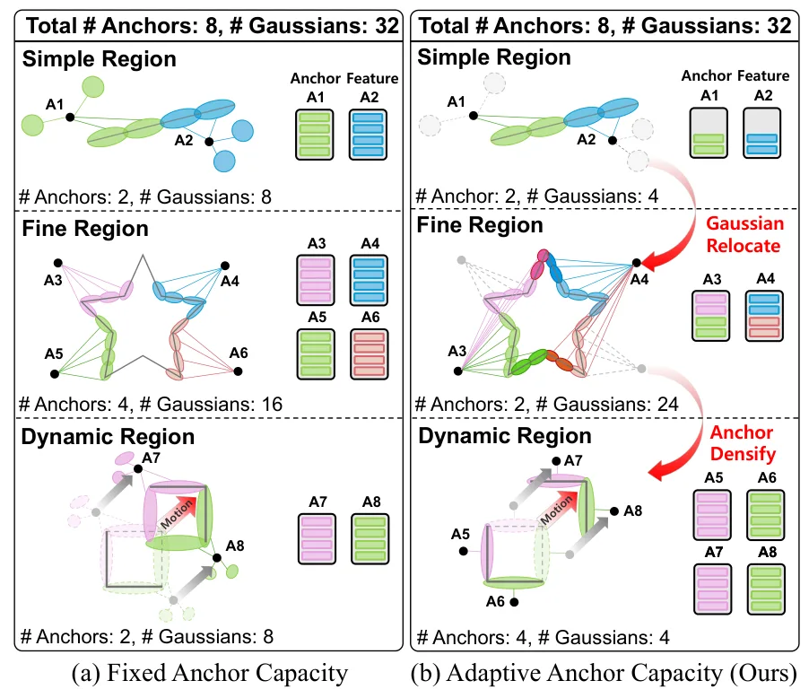
{kind=link}
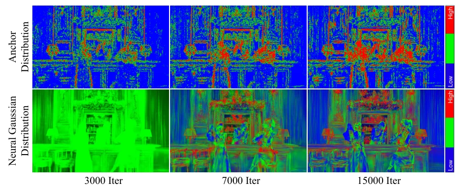
{kind=link}
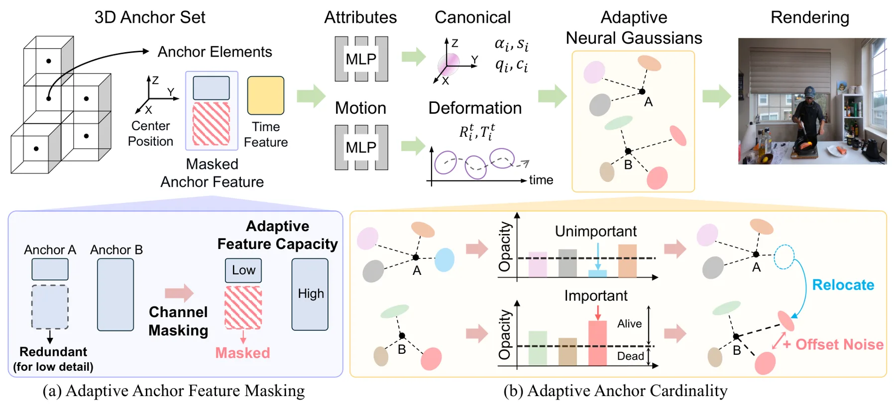
{kind=link}
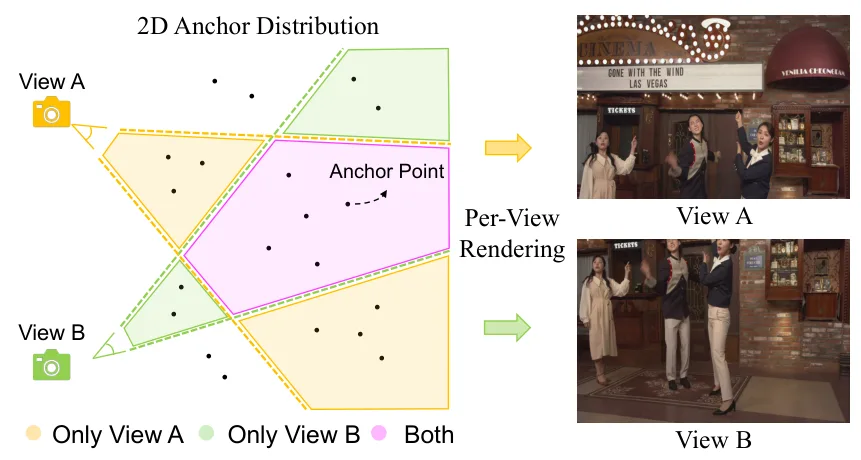
{kind=link}
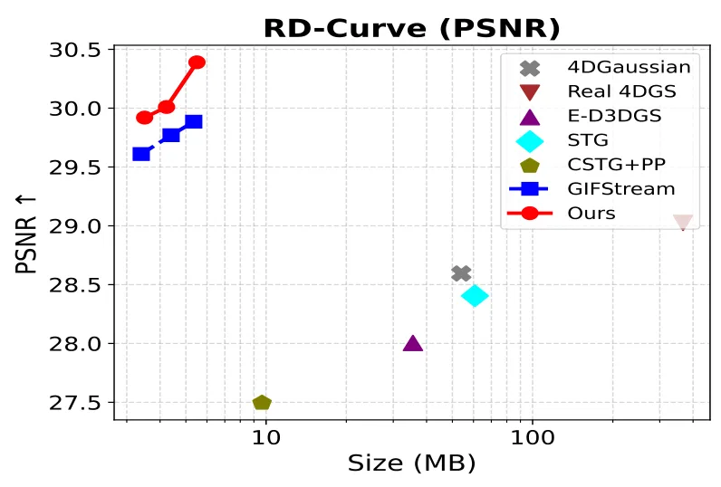
{kind=link}
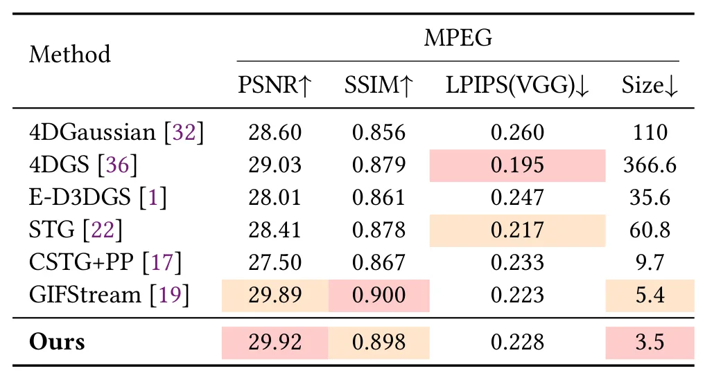
{kind=link}
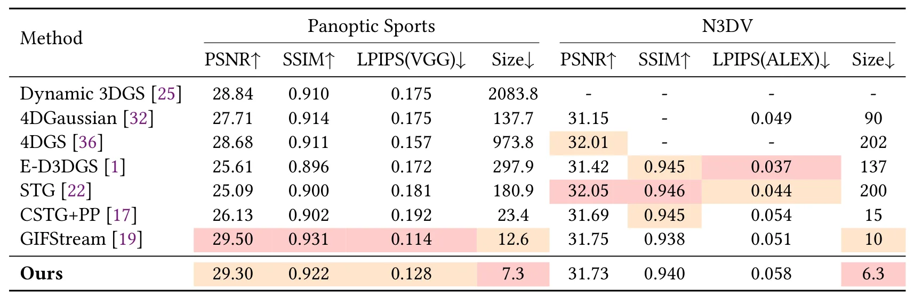
{kind=link}
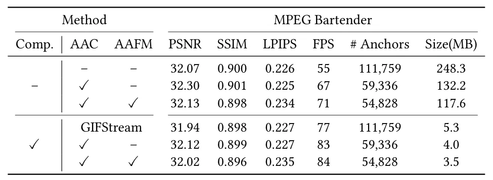
{kind=link}
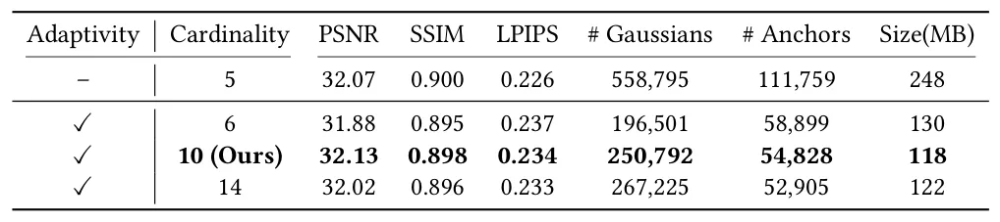
{kind=link}
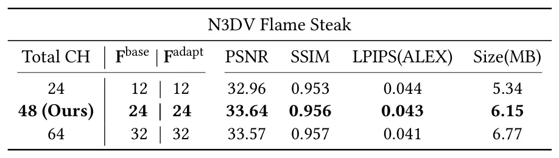
{kind=link}
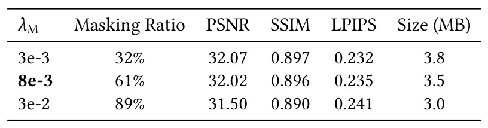